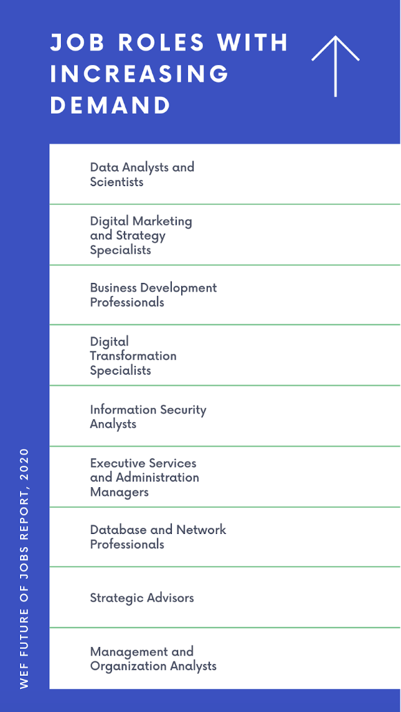
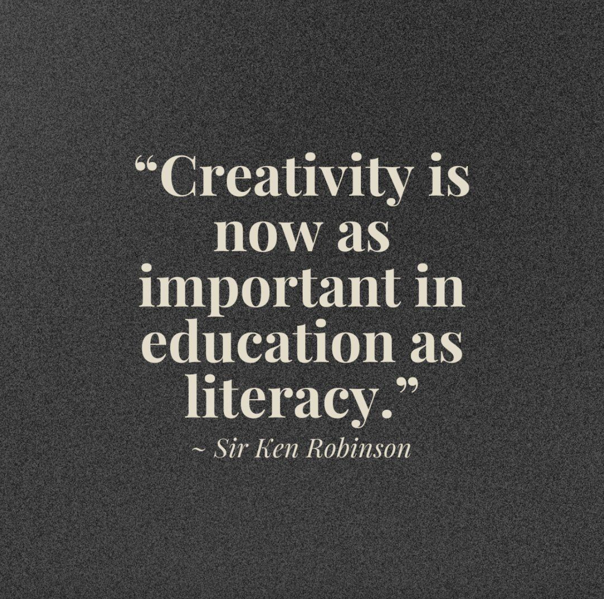

43% of college graduates are underemployed in their first job. Two-thirds of
these graduates will still be underemployed five years later. Of those
workers underemployed at five years, three-quarters will still be without
college-level work at the 10-year mark.
According to a 2018 report by Burning Glass Technologies
Sinjini - And why is that?
Prof BB – I'll try to answer that if you want to know. But before that, do you
know what employability is?
Sinjini - Employability? Um, isn't that my ability, well, anyone's ability to
get employed & then remain employed.
Prof BB - Precisely. Very Good Sinjini. But there's a mistake you're making
here. You are thinking of employability from a young fresher's perspective.
Think about it from an employer's perspective.
Sinjini - Like what do employers look for in a Business Graduate?
Prof BB - Yes.
Sinjini - Good Grades…?
Prof BB - Well, yes. But from an employer's perspective, employability is more
of a set of qualities they are looking for when hiring a business
graduate.
“In the new world of work security lies not in employment, but in
employability.”
Sinjini - Oh!
Prof BB – To answer your question, employers don't hire business graduates for
good job roles because they lack basic employability skills.
Sinjini – Basic employability qualities, Hmm. What are these?
Prof BB - Basic employability skills are critical in getting a job. They include
creativity, ability to communicate effectively, problem-solving, etc. But
because these skills are not the focus of college education, fresh graduates
often lack these skills.
It takes humility to realise that we don’t know everything, and to know
that we must keep learning and observing. If we don’t, we can be sure
someone will be there to take our place.
Cher Wang (HTC Co-founder)
Sinjini - Okay, I think I understand.
Prof BB - Good! Now, suppose we want to talk about the current scenario of the
job market. In that case, the thing is that there is no dearth of jobs which
involve roles in various fields such as Customer Success, Inside Sales, Digital
Marketing, Data Analysis, Office Administration, or even Sales.
Sinjini -Why aren't companies hiring business graduates for these roles?
Prof BB - What graduates lack is the ability to work on the practical part of
it. The problem with our business graduates is that they lack the technical
skills which are very important in this era. This is also one of the reasons why
employers hesitate to hire from this stream. And business graduates have the
theoretical knowledge which is required for these jobs. They don't know how to
analyze complex problems or operate specialized tools. In fact, some can't even
understand the problem. Very few can use their existing skill sets for routine
tasks like interpreting trends in data or using calendars. For example, suppose
there is data given to you, and you need to draw some insights from it. In that
case, you should be able to use MS Excel and other tools to analyze the data and
come up with those insights. Or, if you are an executive assistant, you should
be good at organizing schedules or making travel arrangements.
Sinjini - And what about the tools required in these jobs?
Prof BB – Let me tell you about that. If a business graduate has studied how to
manage a business or how to use basic software such as Excel or PowerPoint and
other aspects of business administration, then shouldn't he or she be expected
to show the slightest bit of proficiency in learning new tools. There's
Salesforce, Zoho, Hubspot, PivotTables, or Power BI? How do you use them?
In fact, this is one of the many reasons why employability skills are so
important. There is a tremendous number of new tools and software available
these days. Many of these solutions can be used to analyze and visualize data in
ways that haven't been possible before.

Sinjini - So, do soft skills matter in between all of this?
Prof BB - Yes, soft skills do matter. Soft skills are all about interpersonal
skills. They include communication, empathy, leadership & other aspects of
interpersonal relationships. Critical thinking ability is also limited among
business graduates because of the not-so-rigorous nature of the degree. But our
business graduates have not thought beyond their existing skill sets.
Sinjini - How can students overcome this?
Prof BB - Students should look to complement their college education with
practical learning. There are some great resources out there. They should look
for hands-on learning where they are required to use their existing skills and
are also taught other skills to increase their employability prospects. They
should look for opportunities where they could work on practical projects. For
example, they should learn how to manipulate or draw insights from that data and
help simplify it to present the data trends to a non-technical audience. Or to
use statistical methods to generate useful business insights. According to
research by Boston University, experiential learning through internships,
community service, and hands-on projects could significantly benefit
students.

Sinjini - Thank you ma'am. So, students should look for avenues where they could
learn skills that are in-demand but practical.
Prof BB - Yes. And it is not just about the tools. It is also about the
analytical skills required to use those tools. Students should also look for
ways to solve problems with these tools, which not many have been taught in
college. They should work on coming up with solutions and learn how to be
innovative & creative while solving the problem. Now, you must go. I don't want
to drag this on for long.
Sinjini - Oh, am I taking up too much of your time?
Prof BB - Not really! But you will miss your Finance Lecture if you continue
talking to me.